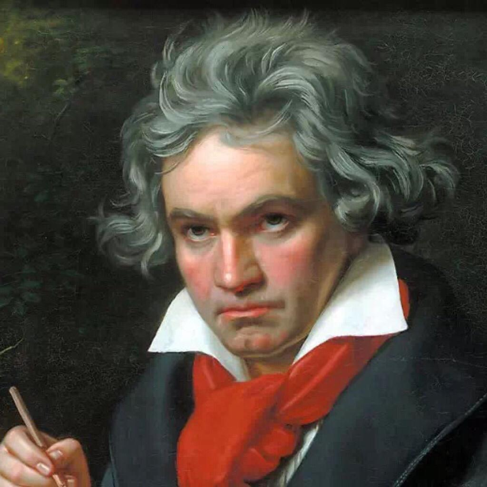

music На главную Выход  Людвиг ван Бетховен Симфонии Концерты Сонаты Симфонии Слушайте <a href='https://music.yandex.ru/album/24934205/track/111530742'>Symphony No. 4 In B-Flat, Op. 60: I. Adagio - Allegro vivase</a> — <a href='https://music.yandex.ru/artist/298326'>Moscow Philharmonic Orchestra</a> на Яндекс Музыке Слушайте <a href='https://music.yandex.ru/album/24934205/track/111530746'>Symphony No. 4 In B-Flat, Op. 60: II. Adagio</a> — <a href='https://music.yandex.ru/artist/298326'>Moscow Philharmonic Orchestra</a> на Яндекс Музыке Наверх Концерты Слушайте <a href='https://music.yandex.ru/album/12904665/track/74012135'>Концерт для фортепиано с оркестром No. 1 до мажор, соч. 15: I. Allegro con brio</a> — <a href='https://music.yandex.ru/artist/6484161'>Бэлла Давидович</a> на Яндекс Музыке Слушайте <a href='https://music.yandex.ru/album/12904665/track/74012141'>Концерт для фортепиано с оркестром No. 3 до минор, соч. 37: I. Allegro con brio</a> — <a href='https://music.yandex.ru/artist/10063'>Святослав Рихтер</a> на Яндекс Музыке Наверх Сонаты Слушайте <a href='https://music.yandex.ru/album/12135368/track/71314947'>Соната для фортепиано No. 3 до мажор, соч. 2 No. 3: IV. Allegro assai</a> — <a href='https://music.yandex.ru/artist/302218'>Татьяна Николаева</a> на Яндекс Музыке Слушайте <a href='https://music.yandex.ru/album/12135368/track/71314936'>Соната для фортепиано No. 1 фа минор, соч. 2 No. 1: I. Allegro</a> — <a href='https://music.yandex.ru/artist/302218'>Татьяна Николаева</a> на Яндекс Музыке Наверх
Симфонии Слушайте <a href='https://music.yandex.ru/album/24934205/track/111530742'>Symphony No. 4 In B-Flat, Op. 60: I. Adagio - Allegro vivase</a> — <a href='https://music.yandex.ru/artist/298326'>Moscow Philharmonic Orchestra</a> на Яндекс Музыке Слушайте <a href='https://music.yandex.ru/album/24934205/track/111530746'>Symphony No. 4 In B-Flat, Op. 60: II. Adagio</a> — <a href='https://music.yandex.ru/artist/298326'>Moscow Philharmonic Orchestra</a> на Яндекс Музыке Наверх
Концерты Слушайте <a href='https://music.yandex.ru/album/12904665/track/74012135'>Концерт для фортепиано с оркестром No. 1 до мажор, соч. 15: I. Allegro con brio</a> — <a href='https://music.yandex.ru/artist/6484161'>Бэлла Давидович</a> на Яндекс Музыке Слушайте <a href='https://music.yandex.ru/album/12904665/track/74012141'>Концерт для фортепиано с оркестром No. 3 до минор, соч. 37: I. Allegro con brio</a> — <a href='https://music.yandex.ru/artist/10063'>Святослав Рихтер</a> на Яндекс Музыке Наверх
Сонаты Слушайте <a href='https://music.yandex.ru/album/12135368/track/71314947'>Соната для фортепиано No. 3 до мажор, соч. 2 No. 3: IV. Allegro assai</a> — <a href='https://music.yandex.ru/artist/302218'>Татьяна Николаева</a> на Яндекс Музыке Слушайте <a href='https://music.yandex.ru/album/12135368/track/71314936'>Соната для фортепиано No. 1 фа минор, соч. 2 No. 1: I. Allegro</a> — <a href='https://music.yandex.ru/artist/302218'>Татьяна Николаева</a> на Яндекс Музыке Наверх